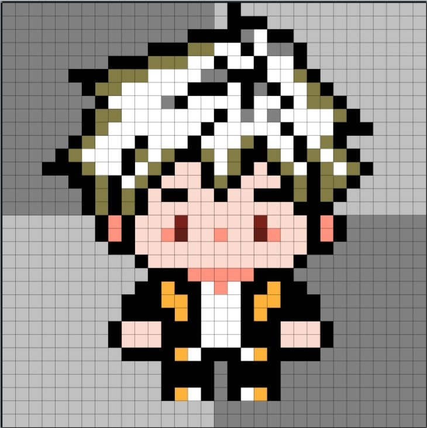
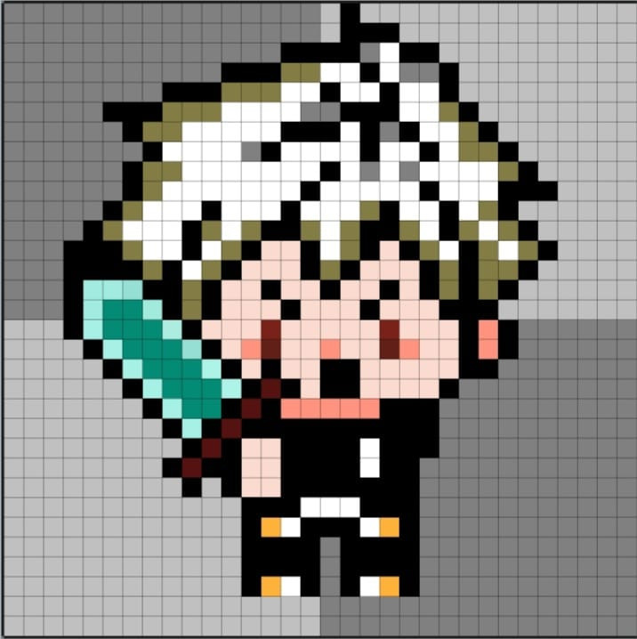
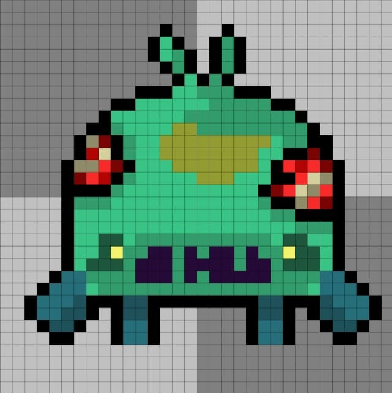
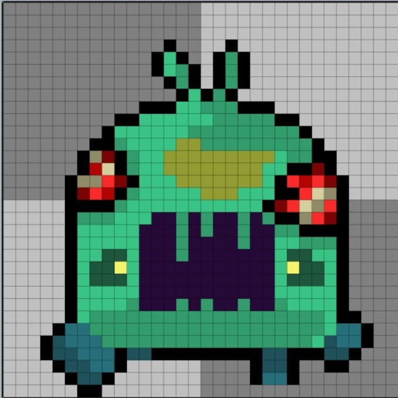

Acción y Supervivencia Postapocalíptica.
Jugadores mayores de 12 años interesados en los videojuegos de exploración y acción, que disfrutan de la recuperación de ecosistemas contaminados, la gestión estratégica de recursos, la exploración táctica y el combate dinámico. Está dirigido a quienes buscan una experiencia de juego que combine desafíos, estrategia y conciencia ambiental.
Videojuego interactivo que fomente la educación ambiental mediante dinámicas de juego enfocadas en la recuperación y restauración de los ecosistemas mediante combates RPG/daugeons.
Archivos clasificados y registros del mundo tras el colapso
La Tercera Guerra Mundial dejó un planeta sumergido en radiación, desechos tóxicos y ecosistemas enteros al borde de la extinción total.
Engendradas por la lluvia ácida radiactiva y fallos de laboratorio militar, acechan en las sombras a los últimos refugios humanos.
Tras perder su asentamiento en un brutal asalto, Kaell emprende el combate armado para rescatar el futuro de los supervivientes.
Módulos de bioingeniería experimental capaces de neutralizar la toxicidad del suelo y reactivar la vida vegetal en las zonas muertas.
Sprites originales y capturas de la versión oficial




Obtén el instalador oficial .exe con el botón superior.
Guarda el archivo en tu carpeta de descargas o escritorio.
Haz doble clic sobre el archivo ejecutable descargado.
Concede permisos de inicio en Windows y disfruta el juego.
Prototipado rápido, definición del concepto visual y lógica básica de movimiento del personaje.
Programación de comportamiento para mutantes, sistema de ataque iteractivo y colisiones básicas.
Corrección de bugs, optimización de recursos, ajustes de dificultad, y creación de entornos postapocalípticos.
Motor de juego compatible con dispositivos móviles y Entorno Web
Elementos de audio, SFX y texturas ambientales obtenidos de librerías de uso libre.
El código fuente y la documentación académica se distribuyen libremente bajo la siguiente normativa internacional:
Los activos de marca, lore y logotipos originales pertenecen al equipo de desarrollo.
Toxic Horizon no recopila, almacena, comparte ni transmite ningún tipo de dato personal, de ubicación o información sensible de los jugadores.
Recomendado para mayores de 13 años. Contiene escenas de combate fantástico contra mutantes, atmósfera de tensión y efectos visuales de radiación.
Esta entrega se proporciona "tal cual" (as-is), con fines estrictamente académicos y sin garantías de compatibilidad o soporte técnico comercial.
¿Encontraste algún bug, error o tienes alguna duda académica sobre este proyecto?
REPOSITORIO DE GITHUB →